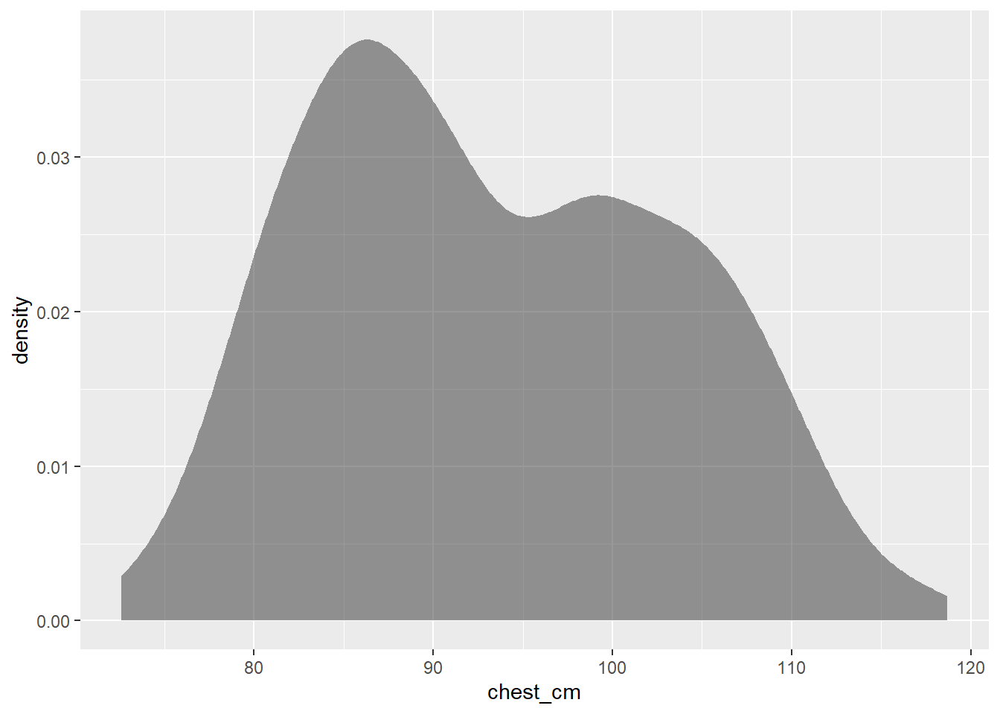
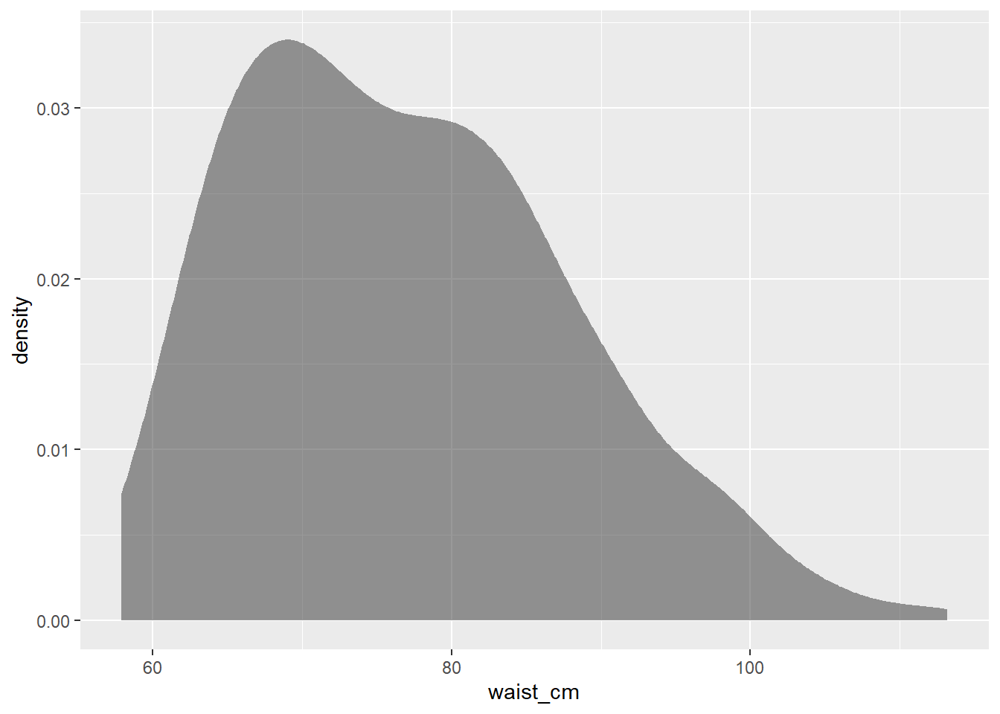
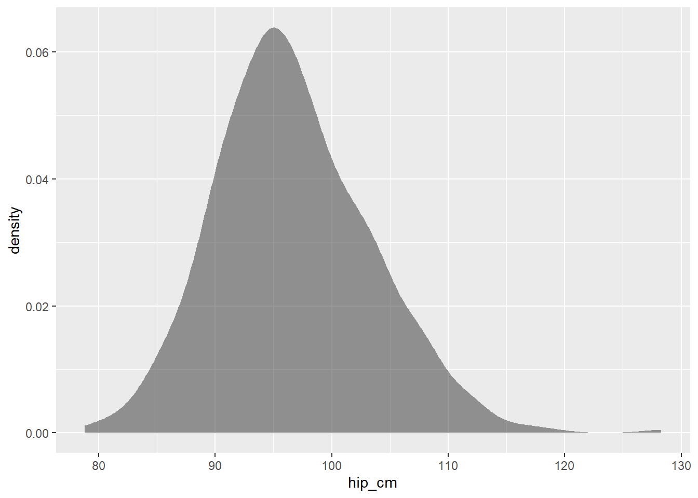
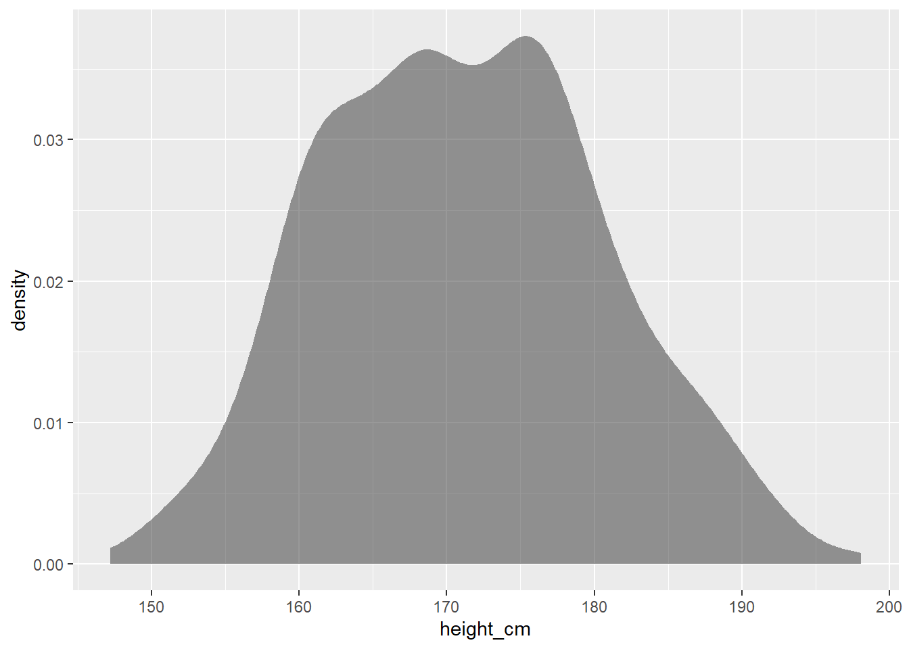
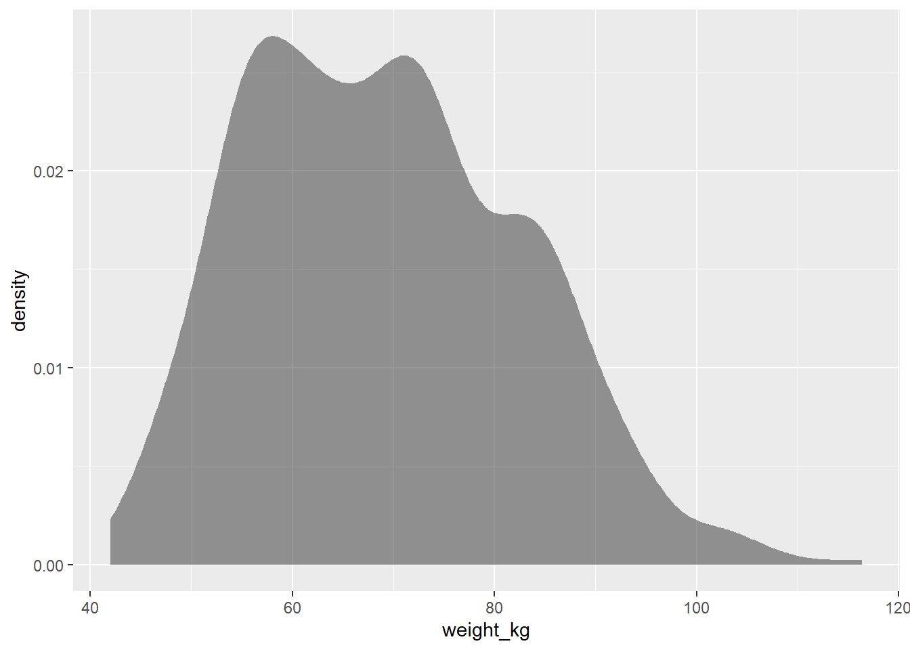

How do bodies measure, how do people talk about mind and school, and how long do countries live?
Panel A — body / measure
height_cm, weight_kg, waist_cm are Quant. sex is Qual.
1. See the table
What is a case? Which columns are Quant / Qual? What is missing?
-We have 6 quantitative variables in our data - age,weight_kg,height_cm,wasit_cm,hip_cm,chest_cm and only 1 qualitative varaible - sex
# glimpse() / inspect() / skim()
library(tidyverse)
── Attaching core tidyverse packages ──────────────────────── tidyverse 2.0.0 ──
✔ dplyr 1.2.1 ✔ readr 2.2.0
✔ forcats 1.0.1 ✔ stringr 1.6.0
✔ ggplot2 4.0.3 ✔ tibble 3.3.1
✔ lubridate 1.9.5 ✔ tidyr 1.3.2
✔ purrr 1.2.2
── Conflicts ────────────────────────────────────────── tidyverse_conflicts() ──
✖ dplyr::filter() masks stats::filter()
✖ dplyr::lag() masks stats::lag()
ℹ Use the conflicted package (<http://conflicted.r-lib.org/>) to force all conflicts to become errors
library(mosaic)
Registered S3 method overwritten by 'mosaic':
method from
fortify.SpatialPolygonsDataFrame ggplot2
The 'mosaic' package masks several functions from core packages in order to add
additional features. The original behavior of these functions should not be affected by this.
Attaching package: 'mosaic'
The following object is masked from 'package:Matrix':
mean
The following objects are masked from 'package:dplyr':
count, do, tally
The following object is masked from 'package:purrr':
cross
The following object is masked from 'package:ggplot2':
stat
The following objects are masked from 'package:stats':
binom.test, cor, cor.test, cov, fivenum, IQR, median, prop.test,
quantile, sd, t.test, var
The following objects are masked from 'package:base':
max, mean, min, prod, range, sample, sum
library(skimr)
Attaching package: 'skimr'
The following object is masked from 'package:mosaic':
n_missing
library(ggformula)
myPanelAData <-read_csv(file="data/panel-A.csv")
Rows: 507 Columns: 7
── Column specification ────────────────────────────────────────────────────────
Delimiter: ","
chr (1): sex
dbl (6): age, weight_kg, height_cm, waist_cm, hip_cm, chest_cm
ℹ Use `spec()` to retrieve the full column specification for this data.
ℹ Specify the column types or set `show_col_types = FALSE` to quiet this message.
categorical variables:
name class levels n missing
1 sex character 2 507 0
distribution
1 female (51.3%), male (48.7%)
quantitative variables:
name class min Q1 median Q3 max mean sd n
1 age numeric 18.0 23.0 27.0 36.00 67.0 30.18146 9.608472 507
2 weight_kg numeric 42.0 58.4 68.2 78.85 116.4 69.14753 13.345762 507
3 height_cm numeric 147.2 163.8 170.3 177.80 198.1 171.14379 9.407205 507
4 waist_cm numeric 57.9 68.0 75.8 84.50 113.2 76.97949 11.012688 507
5 hip_cm numeric 78.8 92.0 96.0 101.00 128.3 96.68087 6.680623 507
6 chest_cm numeric 72.6 85.3 91.6 101.15 118.7 93.33353 10.027621 507
missing
1 0
2 0
3 0
4 0
5 0
6 0
skim(myPanelAData)
Data summary
Name
myPanelAData
Number of rows
507
Number of columns
7
_______________________
Column type frequency:
character
1
numeric
6
________________________
Group variables
None
Variable type: character
skim_variable
n_missing
complete_rate
min
max
empty
n_unique
whitespace
sex
0
1
4
6
0
2
0
Variable type: numeric
skim_variable
n_missing
complete_rate
mean
sd
p0
p25
p50
p75
p100
hist
age
0
1
30.18
9.61
18.0
23.0
27.0
36.00
67.0
▇▅▂▁▁
weight_kg
0
1
69.15
13.35
42.0
58.4
68.2
78.85
116.4
▅▇▇▂▁
height_cm
0
1
171.14
9.41
147.2
163.8
170.3
177.80
198.1
▁▆▇▅▁
waist_cm
0
1
76.98
11.01
57.9
68.0
75.8
84.50
113.2
▆▇▆▂▁
hip_cm
0
1
96.68
6.68
78.8
92.0
96.0
101.00
128.3
▂▇▅▁▁
chest_cm
0
1
93.33
10.03
72.6
85.3
91.6
101.15
118.7
▃▇▆▅▂
2. Ask
One question this table can answer. One it cannot. Write both.
Who is heavier between men and women ? what is the proportion of men and women ? How does waist size vary for men and women? How does hip size vary for men and women? How does chest size vary for men and women? Which sex has a larger variation in their age ranges ? Who is taller between men and women ? What are the age ranges in the dataset ? What is the variation in chest size in the given dataset? What is the variation in waist size in the given dataset ? What is the variation in hip size in the given dataset ? What is the variation in height in the given dataset ? What is the variation in weight in the given dataset ?
3. Choose a mark
Geom, map mark, or (later) test that matches the pair type. Name it before you code.
Who is heavier between men and women ? -histogram
what is the proportion of men and women ? -bar graph
How does waist size vary for men and women? -histogram
How does hip size vary for men and women? -density
How does chest size vary for men and women -density
Which sex has a larger variation in their age ranges ? - bar
Who is taller between men and women ? -histogram
What are the age ranges in the dataset ? -bar
What is the variation in chest size in the given dataset? -density
What is the variation in waist size in the given dataset ? -density
What is the variation in hip size in the given dataset ? -density
What is the variation in height in the given dataset ? -density
What is the variation in weight in the given dataset ? -density
4. Predict
We predict the graph to depict the chest size and hip size of women to be more than men. Referring to the stereotypical anatomy , we predict the variation in chest size and hip size of women to be more than men.
9)What is the variation in chest size in the given dataset
myPanelAData |>gf_density(~chest_cm)

10)What is the variation in waist size in the given dataset
myPanelAData |>gf_density(~waist_cm)

11)What is the variation in hip size in the given dataset
myPanelAData |>gf_density(~hip_cm)

12)What is the variation in height in the given dataset
myPanelAData |>gf_density(~height_cm)

13)What is the variation in weight in the given dataset
myPanelAData |>gf_density(~weight_kg)

6. Say
We all found the density graph comparing chest sizes of men and women interesting because according to the graph, men have a bigger chest size than women which is quite unexpected. Men also have larger variation in the sizes while women have more difference in density for different sizes this is surprising because according to the bar graph comparing the count of men and women , women are more in quantity.
We also found the density graph comparing hip size of men and women surprising because it is contrasting the general belief that women have wider hips.
7. Limit
What this panel cannot do. Which kit table we refused to abuse.
Welch Two Sample t-test
data: chest_cm by sex
t = -24.993, df = 484.62, p-value < 2.2e-16
alternative hypothesis: true difference in means between group female and group male is not equal to 0
95 percent confidence interval:
-16.10362 -13.75614
sample estimates:
mean in group female mean in group male
86.0600 100.9899
Panel B — category / talk
degree × grass is Qual + Qual. mntlhlth is Quant — it belongs in a histogram or a grouped violin, not a mosaic.
1. See the table
What is a case? Which columns are Quant / Qual? What is missing?
The quantitative variables in the dataset are -hours of relaxation(hrsrelax), hours of labour (hrsl) and mental health(mntlhlth) {3} The qualitative variables in the dataset are-degree, marijuana(grass) {2}
# glimpse() / inspect() / skim()
myPanelBData <-read_csv(file="data/panel-B.csv")
Rows: 2044 Columns: 5
── Column specification ────────────────────────────────────────────────────────
Delimiter: ","
chr (2): degree, grass
dbl (3): hrsrelax, mntlhlth, hrs1
ℹ Use `spec()` to retrieve the full column specification for this data.
ℹ Specify the column types or set `show_col_types = FALSE` to quiet this message.
looking at the graph, the ratio of people who think marijuana should be legal and not legal appears to be similar, in each individual degree. saying that, it is surprising information to see that the percentage of high schoolers who want marijuana to be legal is way larger than any other degrees.But this could also be because the number of high schoolers in this dataset is much more.
7. Limit
Panel C — place
lifeExp is the honest fill. pop is a count — symbol map, not choropleth.
Geometry is not in the CSV. Join in R, then use the same seven headings.
# library(sf) # library(rnaturalearth) # world <- ne_countries(scale = "medium", returnclass = "sf") # # join on country name; list the unmatched labels
1. See the table
What is a case? Which columns are Quant / Qual? What is missing?
# glimpse() / inspect() / skim()
2. Ask
One question this table can answer. One it cannot. Write both.
3. Choose a mark
Geom, map mark, or (later) test that matches the pair type. Name it before you code.
4. Predict
What do we think we will see? One sentence, before Run.
5. Make
Human brick first. Optional: one AI prompt, pasted below, only for what section 3 named.
# human chunk # ## Prompt we actually used # ai_draft # ours
6. Say
Caption + one sentence we will stand behind. Title is a sentence, not a column name.
7. Limit
What this panel cannot do. Which kit table we refused to abuse.
Conclusion
What the spine looks like after three panels.
The question we will defend in ninety seconds
What we will not claim
Which lines were human, which were machine
Limits: sample, missingness, the test we did not run
Gift for the steal-this strip (palette, annotation, join trick)